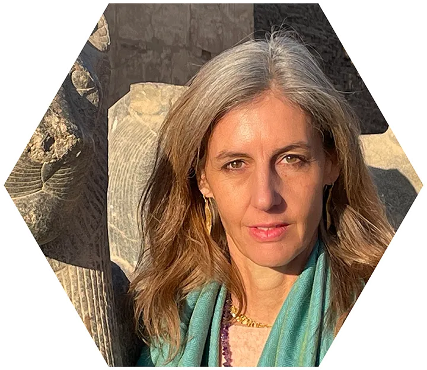
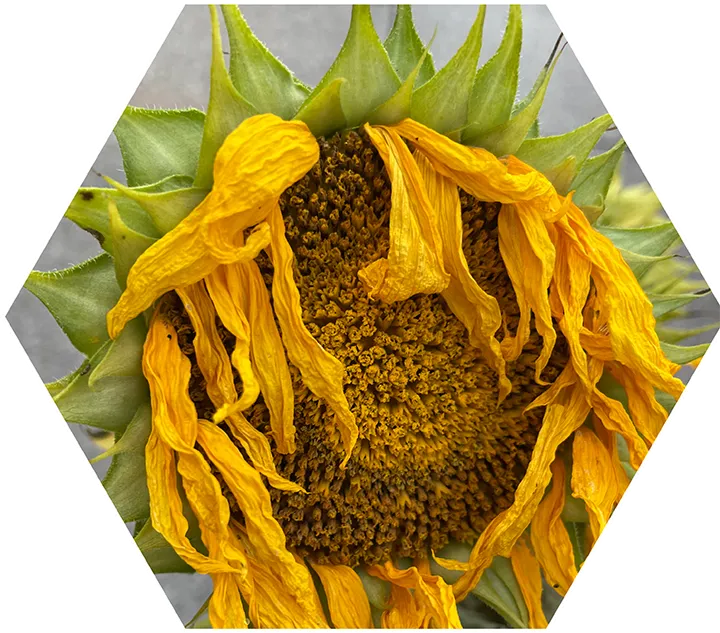
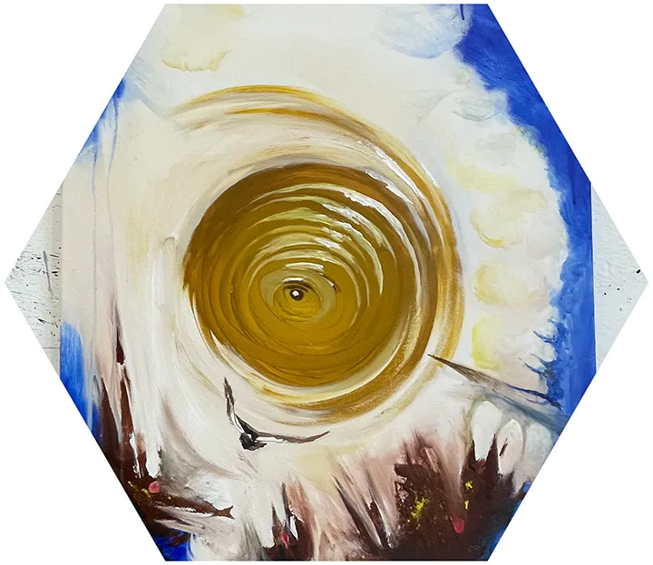
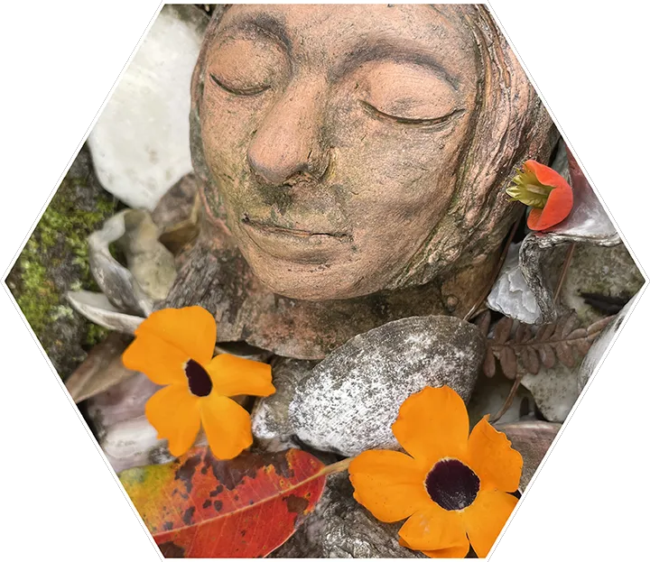
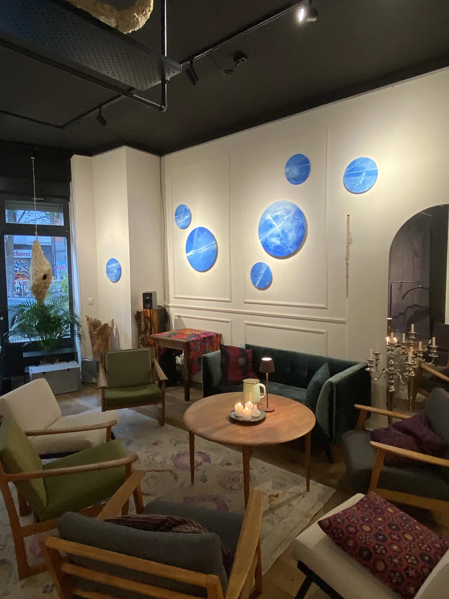
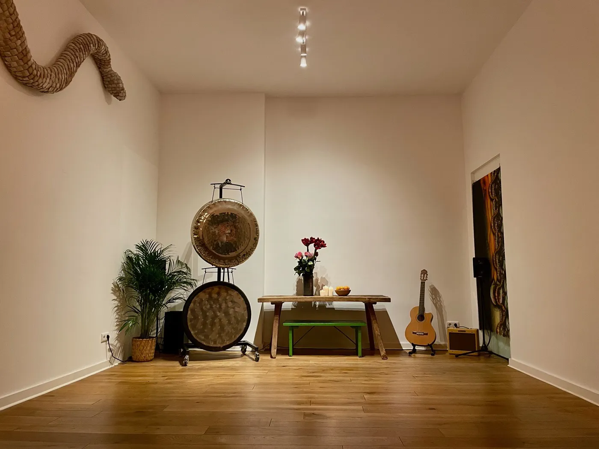
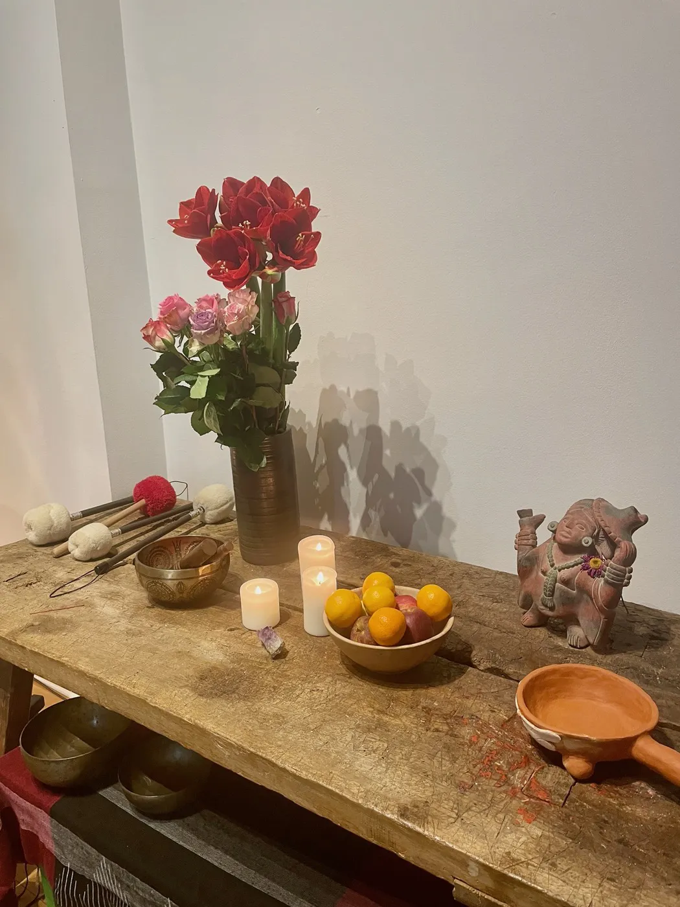
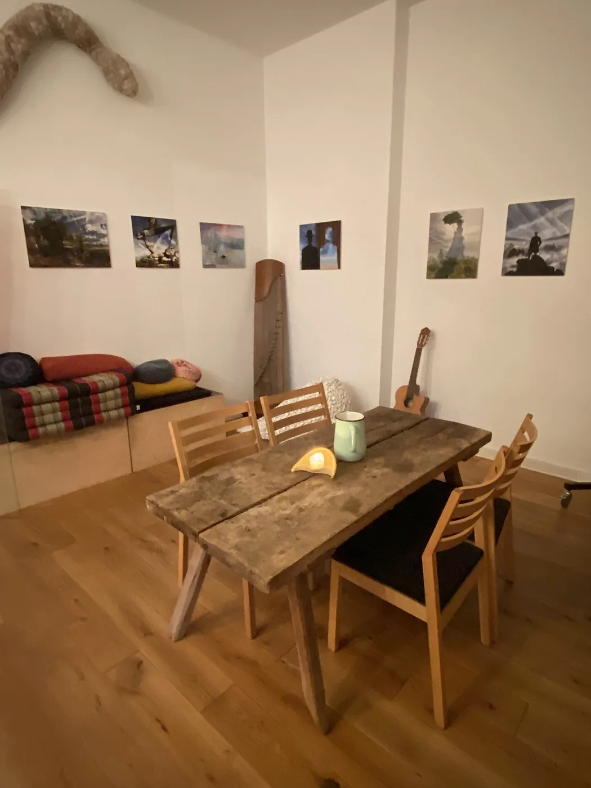
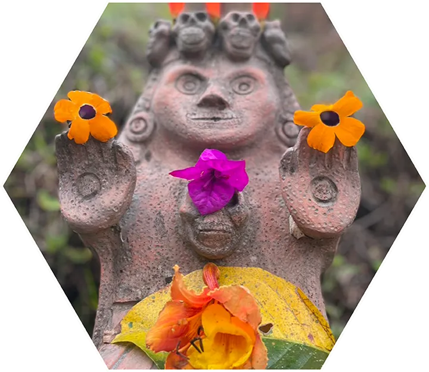

Wer bin ich
Künstlerin, Heilpraktikerin, Körpergeistforscherin

Ich bin seit 25 Jahren bildende Künstlerin, lerne und befasse mich seit ca. 6 Jahren aktiv mit der Heilkunst, bin staatlich geprüfte Heilpraktikerin, Mutter zweier fast erwachsener Kinder, Freigeist, Menschenfreund und begeisterte Bewusstseinsforscherin an eigenem Leib und Seele. Meine angeborene Beidhändigkeit verleiht mir spezielle kognitive Flexibilität und damit die Fähigkeit sowohl zu direkter sinnlicher Intuition als auch klarem Erörtern psychologischer und psychosomatischer Zusammenhänge. Als Künstlerin betrachte und behandle ich das Kunstwerk Mensch auf meine ganz eigene Weise.
Körperarbeit und Geistarbeit gehören für mich untrennbar zusammen, um echte Heilung, Selbsterkenntnis und Entwicklung zu fördern.
Wer bist du
Tapferer, gestresster Großstadtmensch?

Eigentlich ziemlich gesund, aber hier und da ziept's und zuppt's doch immer mal. Deine Muskeln sind vielleicht ständig verspannt, deine Nerven liegen immer öfter blank und du nachts oft wach, es ist alles zu viel oder zu wenig. Du kümmerst dich um ganz viel, außer um Dich selbst. Da ist eine Sehnsucht nach Sich fallenlassen. Du willst dich schon lange um dein körperliches oder seelisches Thema X kümmern. Du denkst du hast keine Zeit dafür oder es ist zu teuer oder dir geht es doch eigentlich gar nicht so schlecht.
Wie gut ist dein NICHT SO SCHLECHT?
Und bist du Dir ein WIRKLICH GUT wert?
Du wünschst Dir eine regelmäßige, für Dich erschwingliche und vor allem erbauliche Routine für deine Selbstfürsorge. Einen Ort und eine Zeit, wo es nur um Dich geht. Wo Dir empathisch und neutral zugehört wird. Wo dein müder Körper gut behandelt wird. Wo deinem Geist und deiner Seele Raum gegeben wird. Wo Du deine Kräfte sammeln kannst, um dann wieder erholt und gestärkt in den Berliner Dschungel zurückzukehren, mit dem Wissen: Alles fließt wieder, ganz einfach.
Was du bei mir findest
Eine Palette an Möglichkeiten

Eine Palette an Möglichkeiten dich selbst zu erkennen und zu wählen, was dir heute gut tut, was du jetzt brauchst. Intensive Körperarbeit, eine Reise zu deinem Überbewusstsein in einer Yager-Session oder heute ein sanftes Gongbad. Endlich eine Auflösung dieses verflixten Glaubenssatzes mit dem erstaunlichen Psych-K© Tool, ein Fläschchen Bachblüten zur Unterstützung für die nächsten Wochen oder doch eine Ohrakupunktur gegen deine Rückenschmerzen oder die endlos verstopften Nasennebenhöhlen.
Wie in der Kunst, so nutze ich in der Heilkunst verschiedene Medien und Werkzeuge um zu erschaffen und zu wirken.
Intuitiv und im Gespräch mit dir entscheiden wir, welches Medium Dir hilft, zu deinem eigenen Meisterwerk Mensch zu werden.
Leistungsspektrum
Womit ich arbeite
Shapeshifting-Körpergeistarbeit
Shapeshifting – Body Mind Re-Design
Fokus: Innere Haltung, äußere Haltung. Wie hältst du es mit dem Leben?
Wir können unsere Haltung des Körpers und des Geistes und damit unseren Ausdruck und Eindruck wandeln und wählen, wann immer wir wollen, wenn wir wieder wissen wie! Unsere innere körperliche Gestalt beeinflusst die Gestaltung unseres Lebens, also die Wahrnehmung, Aktion und Reaktion auf die Welt, unser Dasein und Sosein.
In unserer Zusammenarbeit können wir nun diesen wie auch immer gearteten Fluss der Lebensenergie im eigenen Körpergeistuniversum aufspüren, anschauen und dann unser Repertoire an Möglichkeiten erweitern.
Wie atmest, stehst, sitzt, schaust, hörst, läufst, liegst Du? Wie erlebst, handelst und antwortest Du auf die Fragen, Aufgaben und Begegnungen deines Lebens? Merkst du was und wie Du es tust? Fühlt es sich gut an? Wählst Du deine Art zu leben oder wirst du von deinen unbewussten Haltungen und Reaktionen gelebt? Echte Kontrolle ist die Freiheit selbst zu wählen
Es geht bei der Arbeit nicht um “Was ist falsch mit mir” oder “Traumabearbeitung”, schon gar nicht um “Massage” oder das überstrapazierte Wort “Heilung” - sondern um einfache und praktische Antworten auf die Frage “Was ist in meinem System überhaupt los? Dient es mir? Was will ich wirklich? Wie kann ich das in meinem System verkörpern?”. Wir lernen zusammen deine Freiheit und Fähigkeit zu entwickeln, wirklich das zu verkörpern und zu wählen, was deiner wahren Intention entspricht. Und das ist doch meist ganz einfach und gilt für alle(s) Leben:
to be able to relax, to be able to have energy,
to be able to choose your creation.
Im Gegensatz zur Psychotherapie, die einen Top-Down Ansatz verfolgt, arbeiten wir Bottom-Up: Wir erforschen und verändern die Körperhaltung, und die geistige Haltung ändert sich dadurch automatisch. Und dieses Erforschen und verändern des inneren Kosmos, learning to shapeshift, ist sehr erfüllend, es ist die ultimative Reise zu Dir selbst.
Psych-K©
Was willst du? Aber was glaubst du? Vieles was uns im Weg steht, sind nicht unsere wachen Gedanken, sondern verborgene Glaubenssätze aus früheren Prägungen. Mit Psych-K© begeben wir uns gemeinsam auf einen spannenden, detektivischen Weg um deine dich hemmenden Glaubenssätze aufzuspüren. Du wandelst sie mit meiner Unterstützung bewusst in einen dir besser dienenden Glaubenssatz um, dann wird dieser in deinem Unterbewusstsein verankert. Dazu werden Methoden der Kinesiologie und des Hirnhemisphären-Balancings genutzt. Du bleibst die ganze Zeit wach und beteiligt.
Diese Methode folgt einem klaren Protokoll, macht richtig Spass und ist effektiv sowohl bei körperlichen als auch seelischen Herausforderungen oder Zielen.
Yager-Therapie
Wie KI für innen. Wir treten in Kommunikation mit deinem Überbewusstsein, hier “Zentrum” genannt, und lassen deine interne, dir wohlgesonnene Intelligenz alte Konditionierungen in dir aufspüren und umwandeln. Du selber musst gar nichts tun und es schon gar nicht verstehen. Lass Zentrum einfach die Arbeit machen und lehn dich zurück. Erstaunlicherweise funktioniert das sowohl für psychische Themen (Ängste, Blockaden, Süchte) als auch für körperliche Leiden, denn auch diese haben fast immer einen psychogenen Anteil.
Energiearbeit
Eine bemerkenswerte Methode, sozusagen die energetische Grundreinigung, ist die Chakrausrichtung. Selbst wenn Du es bisher als esoterischen Humbug abgetan hast, Du wirst mit eigenen Augen sehen können wie der Schwung deiner Chakren, deiner energetischen Organe, sichtbar wird. Und wir sorgen dafür, dass alle sieben wieder richtig schwingen.
Ohrakupunktur
Das Ohr ist über die Hirnnerven mit dem vegetativen, also unwillkürlichen Nervensystem verbunden. Alle Organe sind hier, ebenso wie in der Fußsohle, repräsentiert. Daher kann man am Ohr durch klar gesetzte Reize mit Nadeln oder nichtinvasiv mit Ohrsamen verschiedene Beschwerden direkt ansprechen, die Energie in Fluss bringen und die Organe, das Muskelgewebe und das Nervensystem unterstützen, sich zu entspannen und zu regenerieren, einen Fülle- oder Mangelzustand auszugleichen.
Besonders indiziert bei Muskelverspannungen, Migräne, PMS, Sinusitis, Angst- und Erschöpfungszuständen, Allergien, Nikotinentwöhnung etc.
Bachblüten
Die 38 Bachblütenessenzen sind sanfte Begleiter auf feinstofflicher Ebene, sie können helfen deine ebenso im Grunde feinstofflichen Gemütszustände zu regulieren und dich akut aber auch im Alltag regelmässig zu unterstützen. In einem Gespräch und anhand von Bildkarten loten wir die passenden Blüten für dich aus.
Gong/Klangbad Sessions
Ein Gong- und Klangbad ist die ultimative Entspannungsreise zu dir selbst und gleicht einer erfrischenden Dusche auf zellulärer Ebene. Das grosse Klangspektrum, die Frequenzen von ca. 60 Hertz in der Tiefe bis mehreren Kilohertz in den Obertönen bringen jede Zelle in deinem Körper in Schwingung, der Energiefluss wird angeregt, Gedanken verfliegen im Rausch der Schwingungen, der Körpergeist wird als ganzheitlich fliessender Organismus und Teil des schwingenden Kosmos wahrgenommen. Loslassen. Fallenlassen. Getragen werden von der Erkenntnis: Alles ist Klang.
Intensität, Sanftheit. Danach: der Körper ist erfrischt und neu justiert, der Geist geleert und ruhig.
Weitere Methoden
Je nach Bedarf habe ich noch einige andere „Medien" in meinem Heilkunstrepertoire, die ich ggf. intuitiv auswähle, um Dir individuell am sinnvollsten zu helfen. Z.B. The Work by Byron Katie, tibetische Atemreinigung, Breathwork Session, progressive Muskelentspannung. Ich lerne auch nie aus und bin gespannt, was ich noch alles entdecken darf.
Die Anwendung von Heilmethoden ist bei mir nicht dogmatisch, sondern immer situationsbezogen auf das Wesen und die Umstände des Klienten ausgewählt. Wie ich einen Granit nicht mit Händen bearbeiten kann und Ton nicht mit Hammer und Meissel, so eignen sich unterschiedliche Heilmethoden für die sehr unterschiedlichen Menschentypen. Ich feiere die Vielfalt des Lebens und bin froh, sowohl in der Kunst als auch in der Heilkunst so viele Werkzeuge und Kenntnisse zu haben, die Entfaltung und Schöpfung von Wohl-Sein zu ermöglichen.
Kosten
Sich selbst etwas Gutes tun hat seinen Preis.
Ich möchte ihn so gestalten, wie es der jeweiligen individuellen Situation angemessen ist.

Sich um seine ganzheitliche Gesundheit zu kümmern, soll kein Luxus sein, sondern so normal wie Essen und Zähneputzen und im Alltag regelmässig erschwinglich. Ich weiss, dass gerade in Berlin für viele das Geld knapper wird und das Leben anstrengender. Dann sollte man erst recht die Möglichkeit haben und wahrnehmen, sich und seine Resilienz zu stärken.
Oft sind die hohen Stundenpreise für Körperarbeit, Therapie und Coaching notwendig und natürlich dem finanziellen Druck der Behandelnden geschuldet, neben allen Nebenkosten und Abgaben noch davon leben zu müssen. Ich sage es ganz offen, ich habe diesen zum Glück nicht und der Wunsch Menschen zu helfen, hat sowieso nichts mit Geld zu tun. Ein angemessener finanzieller Energieaustausch ist als Wertschätzung dennoch nötig, damit es fliessen kann.
Daher biete ich nach Selbsteinschätzung und dem Solidarprinzip folgende Sliding Scale an:
Erstgespräch und Behandlung, ca. 90 min: 30 bis 100 €
Regelmässige Behandlung, ca. 60 min: 20 bis 70 €
Du zahlst das, was du wirklich guten Gewissens kannst und willst. Wir besprechen das vorab, damit wir beide Klarheit haben.
Ich mache meine Arbeit aus und mit Leidenschaft, so gut ich es vermag, für das Leben.
Soweit es sich um klassische Einzelleistungen handelt, berechne ich anhand des Gebührenverzeichnisses für Heilpraktiker.
Praxis
Schöner Raum, gutes Gefühl
Die Heilpraxis befindet sich im schönen Weltraum, unserem urbanen Salon in der Pappelallee 4 im Prenzlauer Berg. Hier, umgeben von Kunst und geborgen im wohnlichen Ambiente können wir deine Selbstheilungskräfte am besten motivieren, denn Ästhetik, gutes Licht und angenehme Raumatmosphäre haben nachweislich positive Effekte auf Gesundheit und Wohlbefinden.




StimmenWas andere sagen
„Ein völlig neues positives Körpergefühl ist in den Behandlungen überraschenderweise hochgekommen. Ihr äußerst feinfühliges Wirken hat mich regelrecht beflügelt. Auch die Bachblütentherapie empfand ich als sehr unterstützend in meinem Alltag.“
Maximiliane W., September 2026
Kontakt
Schreib mir oder ruf an

- Praxis
- Tina Zimmermann
Praxis im Weltraum
Pappelallee 4
10437 Berlin
- Telefon
- 0177 4065824
Meine Praxiszeiten sind nach Vereinbarung im Zeitraum
Montag bis Mittwoch 10 bis 16 Uhr
Donnerstag 16 bis 20 Uhr
Bitte ruf an oder schreib mir per SMS oder Mail mit einem Terminwunsch in dieser Zeit.
Impressum und Datenschutz
Angaben gemäß § 5 DDG
Tina Zimmermann
Praxis im Weltraum
Pappelallee 4
10437 Berlin
Telefon: 0177 4065824
E-Mail: post@heilpraxis-zimmermann.org
Berufsbezeichnung
Heilpraktikerin, verliehen in der Bundesrepublik Deutschland. Erlaubnis zur Ausübung der Heilkunde ohne Bestallung nach dem Heilpraktikergesetz.
Zuständige Aufsichtsbehörde
Bezirksamt Lichtenberg von Berlin, Gesundheitsamt, Alfred-Kowalke-Straße 24, 10315 Berlin
Berufsrechtliche Regelungen
Heilpraktikergesetz (HeilprG) und Erste Durchführungsverordnung zum Heilpraktikergesetz. Einsehbar unter gesetze-im-internet.de/heilprg.
Umsatzsteuer
Heilbehandlungen sind nach § 4 Nr. 14 UStG umsatzsteuerfrei. Eine Umsatzsteuer-Identifikationsnummer besteht nicht.
Streitbeilegung
Ich bin nicht bereit und nicht verpflichtet, an Streitbeilegungsverfahren vor einer Verbraucherschlichtungsstelle teilzunehmen.
Hinweis
Die auf dieser Seite beschriebenen Verfahren gehören zur Erfahrungsheilkunde und sind wissenschaftlich nicht in allen Punkten anerkannt. Sie ersetzen keine ärztliche Diagnose oder Behandlung. Ein Heilversprechen wird nicht gegeben.
Datenschutzerklärung
Verantwortliche
Tina Zimmermann, Pappelallee 4, 10437 Berlin, Telefon 0177 4065824, post@heilpraxis-zimmermann.org
Aufruf der Webseite
Beim Aufruf dieser Seite verarbeitet der Hosting-Anbieter automatisch technische Daten wie IP-Adresse, Datum und Uhrzeit, aufgerufene Seite, Browsertyp und Betriebssystem (Server-Logfiles). Das ist nötig, um die Seite auszuliefern und sicher zu betreiben (Art. 6 Abs. 1 lit. f DSGVO). Die Daten werden nicht mit anderen Daten zusammengeführt und nach kurzer Zeit gelöscht.
Schriften
Die Schriftarten dieser Seite liegen auf dem Server der Webseite. Es wird dafür keine Verbindung zu Google oder einem anderen Anbieter aufgebaut und es werden keine Daten dorthin übertragen.
Kontaktaufnahme
Wenn du mich per Telefon oder E-Mail kontaktierst, verarbeite ich deine Angaben, um deine Anfrage zu beantworten und Termine zu vereinbaren (Art. 6 Abs. 1 lit. b DSGVO). Gesundheitsdaten, die du mir dabei mitteilst, behandle ich vertraulich und verarbeite sie nur zur Behandlung (Art. 9 Abs. 2 lit. h DSGVO). Als Heilpraktikerin unterliege ich der Schweigepflicht.
Lokale Speicherung im Browser
Die Seite merkt sich in deinem Browser, ob du den Ton ein- oder ausgeschaltet hast. Diese Einstellung bleibt auf deinem Gerät und wird nicht an mich übertragen. Cookies zu Werbe- oder Analysezwecken setze ich nicht.
Deine Rechte
Du hast das Recht auf Auskunft, Berichtigung, Löschung, Einschränkung der Verarbeitung, Datenübertragbarkeit und Widerspruch. Wende dich dafür an die oben genannte Adresse. Außerdem kannst du dich bei einer Aufsichtsbehörde beschweren, zuständig ist die Berliner Beauftragte für Datenschutz und Informationsfreiheit, Alt-Moabit 59–61, 10555 Berlin.
Stand
September 2026